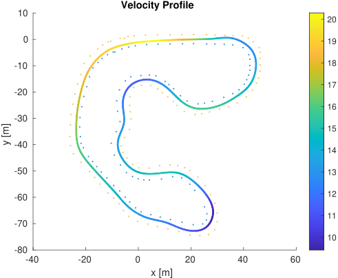

Formula Student model-based trajectory optimization using a dynamic bicycle model for optimal race line planning.
View on GitHubTrajectory Optimizer (TRO) is an offline trajectory optimization tool developed for Formula Student race cars (BCN eMotorsport's CAT14X & CAT15X) using a dynamic bicycle model. It calculates the optimal race line along a given track, providing velocity, yaw rate, steering and throttle profiles for each point.
This software was shared as part of my Bachelor’s thesis.
Clone the repository and follow the instructions in the README to build and run the trajectory optimizer. Ensure all dependencies, including ROS Noetic and CasADi, are correctly installed.
midline node with midline.launch to compute midline path (simple gate generation approach).optimizer node with optimizer.launch to compute optimal trajectory.tro node with tro.launch for online trajectory publishing (with 0.05m sampling distance).This optimizer was developed during the 2021-22 Formula Student season and produces optimal race lines that maximize performance while respecting vehicle dynamics constraints. It has been validated on CAT14X & CAT15X cars and offers a solid foundation for advanced model-based control strategies in competitive racing.

Formula Student Germany 2019 track results